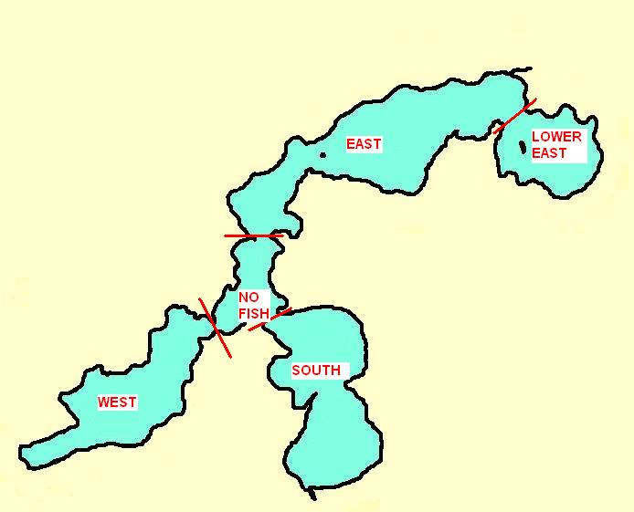

Wisconsin Department of Natural Resources regulations prohibit placement of permanent waterway markers without permits. Furthermore, regulatory markers (such as "Slow-No Wake"), as opposed to navigational markers (such as "Rocks"), are not enforceable without properly adopted municipal ordinances.
REGULATORY BUOYS: The town of St. Germain adopted ordinance #XXXXXXXX which authorizes placement and enforcement of Slow-No Wake zones in the narrows between West and No Fish bays and between South and No Fish bays. The definition of Slow-No Wake actually has nothing to do with how much wake a boat makes. It is defined as the slowest speed a watercraft can operate at and still maintain steerage control. A map with GPS coordinates depicting the authorized location of these buoys can be seen by clicking HERE.